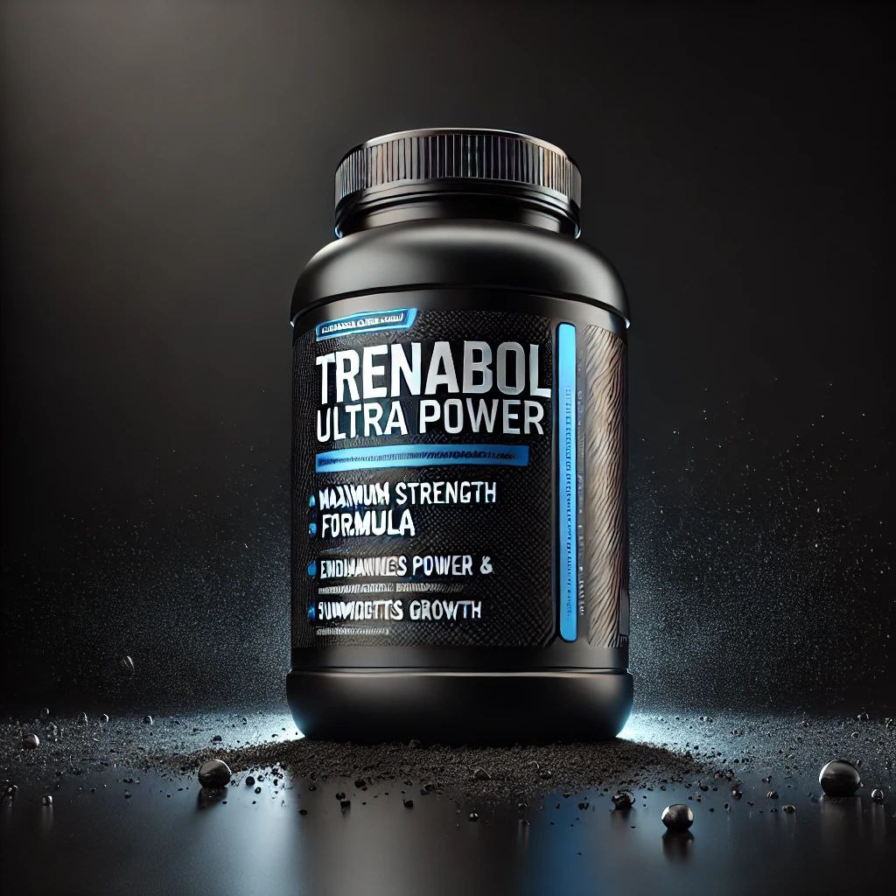
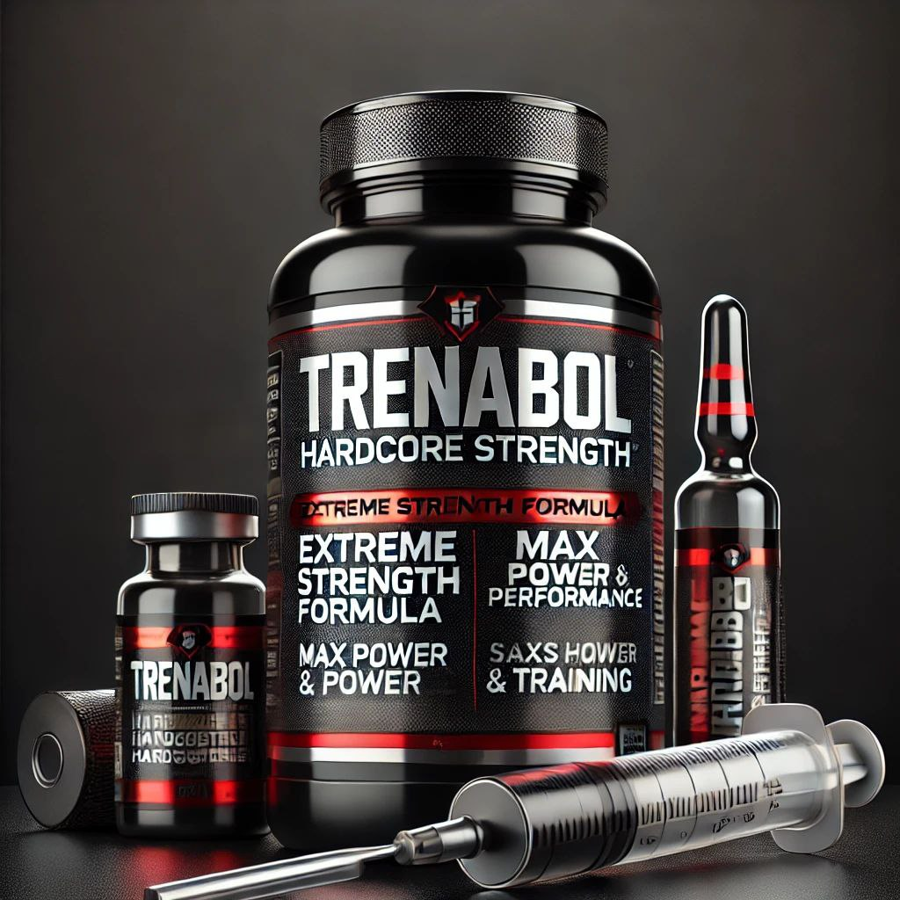
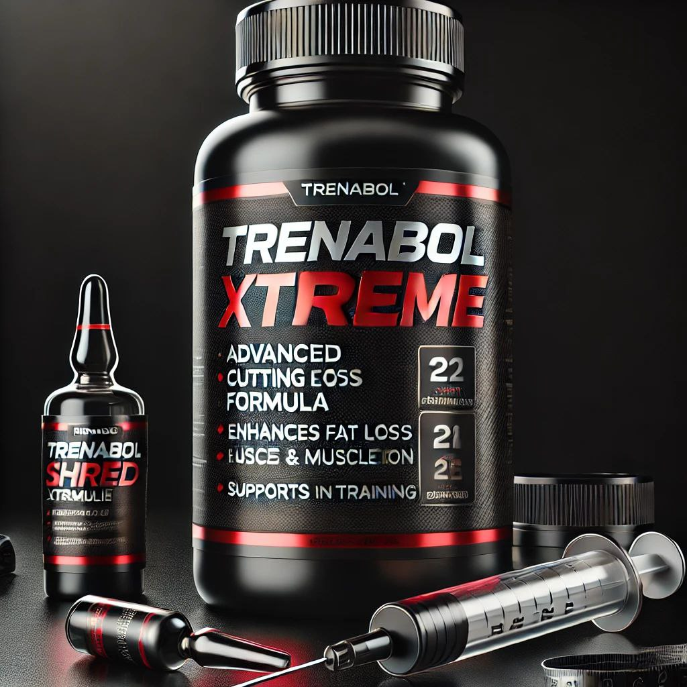
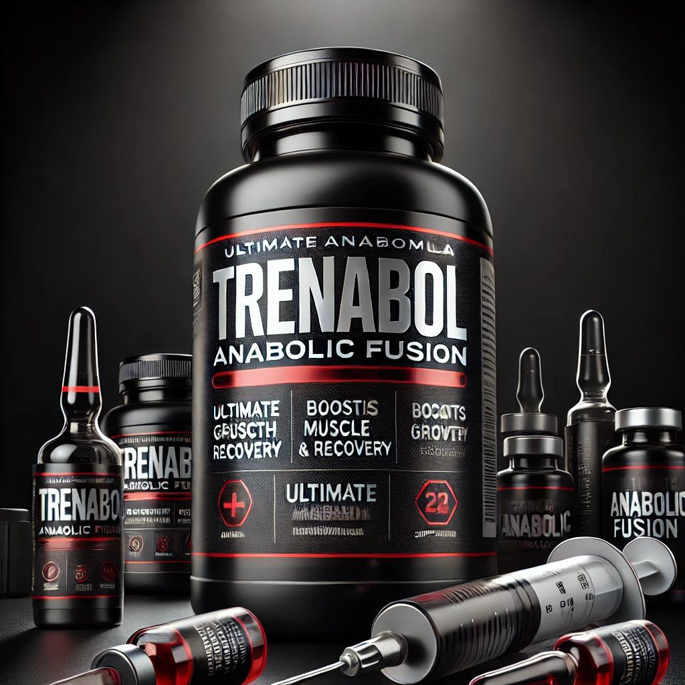
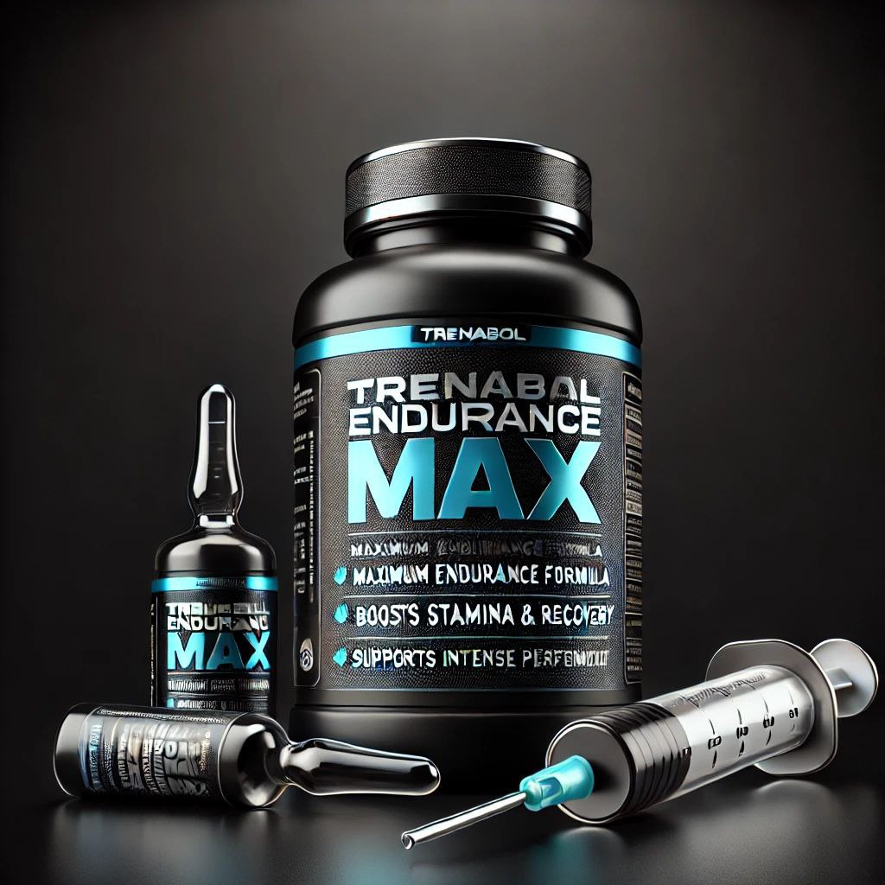
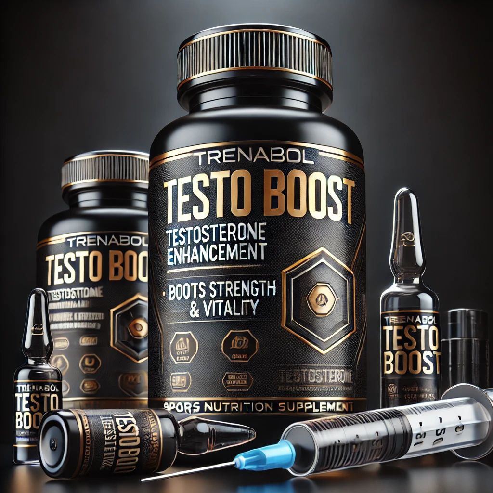
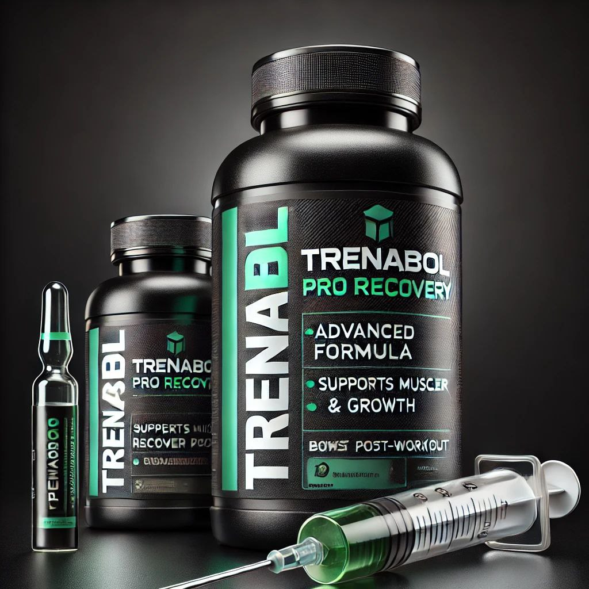
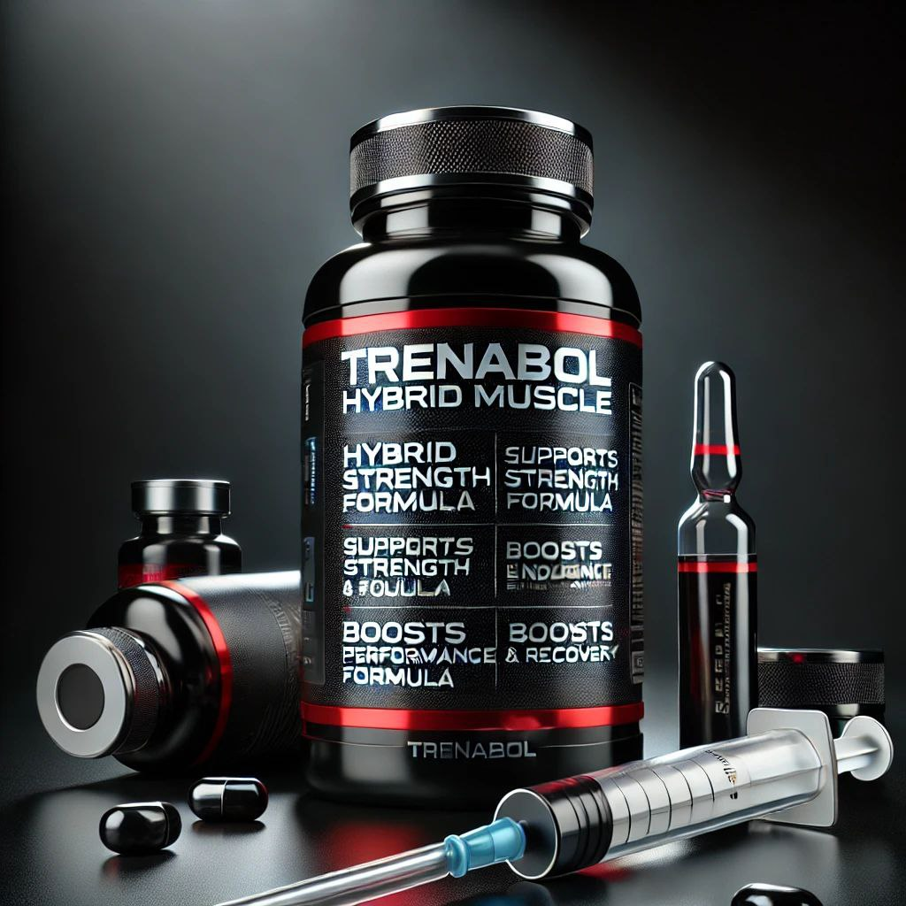

Формула для набора массы, содержащая повышенное количество белков и углеводов. Отличный вариант для атлетов, стремящихся к быстрому росту мышечной массы.
Состав:
Белок – 40 г
Углеводы – 80 г
Креатин – 5 г
ВСАА – 7 г
Витамины и минералы

Trenabol Ultra Power
Высокоэнергетический комплекс для увеличения силы и выносливости. Содержит креатин и бета-аланин для максимальной производительности.
Состав:
Белок – 35 г
Креатин – 7 г
Бета-аланин – 2 г
Аргинин – 5 г
Витамины B6, B12

Trenabol Hardcore Strength
Продвинутая формула для увеличения силовых показателей. Подходит для пауэрлифтеров и бодибилдеров.
Состав:
Белок – 45 г
Креатин – 6 г
Глютамин – 5 г
Цитруллин малат – 3 г
Витамин D, кальций, магний

Trenabol Shred Xtreme
Специально разработан для сушки и рельефа. Содержит жиросжигающие компоненты и L-карнитин.
Состав:
Белок – 50 г
L-карнитин – 2 г
Зеленый чай – 500 мг
CLA – 1 г
Витамины C, E

Yrenabol Anabolic Fusion
Комплекс для ускоренного восстановления и роста мышц. Подходит для спортсменов, которые испытывают высокие нагрузки.
Состав:
Белок – 42 г
ВСАА – 10 г
Глютамин – 8 г
Креатин – 4 г
Витамины A, D, E

Trenabol Endurance Max
Поддержка выносливости и энергии на длительных тренировках. Улучшает кислородный обмен и кровообращение.
Состав:
Белок – 30 г
Бета-аланин – 3 г
Цитруллин – 4 г
Железо, магний, калий

Trenabol Testo Boost
Уникальная формула с тестостероновыми бустерами для повышения силы и энергии. Идеально подходит для набора массы.
Состав:
Белок – 38 г
Трибулус – 750 мг
D-аспарагиновая кислота – 2 г
Цинк, магний, витамин D

Trenabol Pro Recovery
Формула для быстрого восстановления после интенсивных тренировок. Снижает уровень катаболизма и улучшает синтез белка.
Состав:
Белок – 50 г
Глютамин – 10 г
Электролиты – 2 г
Омега-3 жирные кислоты – 1 г
Витамины B-комплекса

Trenabol Hybrid Muscle
Уникальная смесь белков и углеводов для баланса массы и рельефа. Отлично подходит для межсезонья.